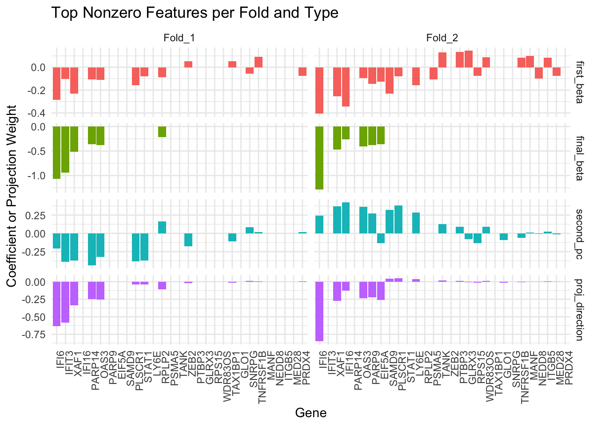
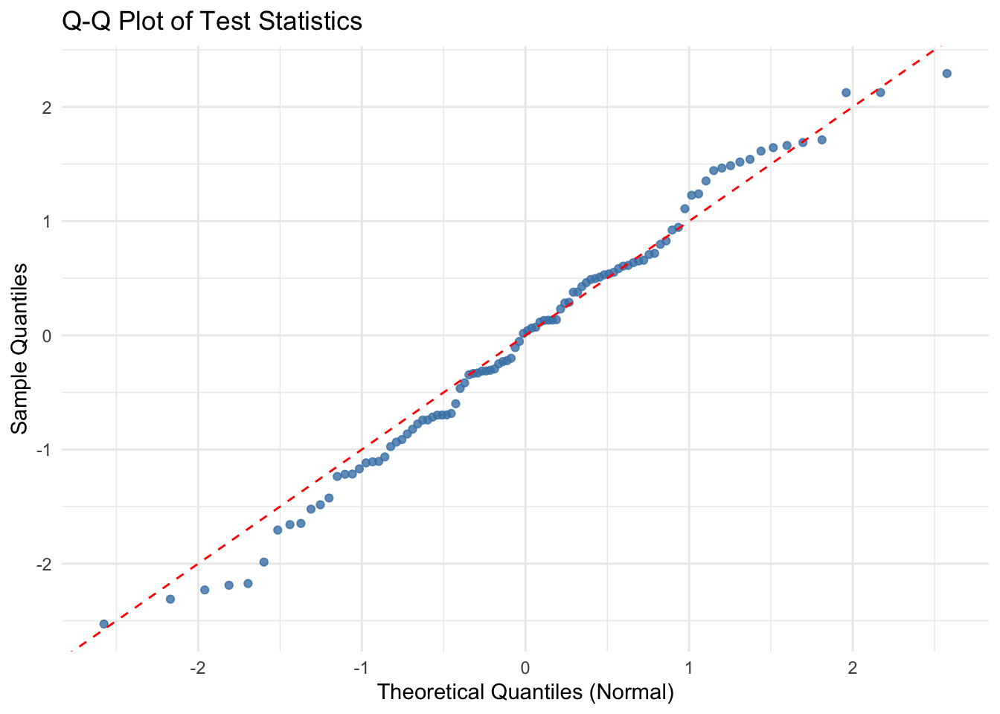

my_local_path <- "~/your/local/path/"
url <- "https://raw.githubusercontent.com/terrytianyuzhang/HMC/main/docs/data/tiny_cleary_for_HMC.rds"
dest_file <- paste0(my_local_path, "tiny_cleary_for_HMC.rds")
download.file(url, dest_file, mode = "wb") Performing Convergence Analysis with XConTest
This tutorial demonstrates how to perform convergence analysis using XConTest.
We will use a sample dataset, which can be downloaded using the following command.
To get started, install the HMC package from GitHub using the following command:
devtools::install_github("terrytianyuzhang/HMC/HMC_package")Next, load the required packages and data, then extract the control and treatment groups for the convergence analysis. We will use STAT1 and STAT2. Based on their names, we expect them to induce similar effects when perturbed.
library(data.table)
library(HMC)
# Load data
residual_subset <- readRDS(paste0(my_local_path, "tiny_cleary_for_HMC.rds"))
# Subset to control and treatment groups, then remove guide labels
control <- residual_subset[
Guides_collapsed_by_gene == "non-targeting",
!"Guides_collapsed_by_gene"
]
STAT1 <- residual_subset[
Guides_collapsed_by_gene == "STAT1",
!"Guides_collapsed_by_gene"
]
STAT2 <- residual_subset[
Guides_collapsed_by_gene == "STAT2",
!"Guides_collapsed_by_gene"
]First 3 cells and first 5 genes from the control group:
control[1:3, 1:5] MALAT1 FTH1 NEAT1 CAP1 FTL
<num> <num> <num> <num> <num>
1: 0.06779834 0.01032825 0.01288475 0.018713570 0.003885878
2: 0.10235660 0.01502890 0.01529569 0.005780347 0.005958204
3: 0.08374384 0.01067323 0.01204160 0.009304871 0.003010400First 3 cells and first 5 genes from the STAT1 group:
STAT1[1:3, 1:5] MALAT1 FTH1 NEAT1 CAP1 FTL
<num> <num> <num> <num> <num>
1: 0.10705896 0.01455491 0.01648723 0.011259870 0.012455195
2: 0.07751155 0.04359122 0.01270208 0.009382217 0.009670901
3: 0.09746205 0.02317766 0.01390659 0.032448719 0.0063738561. Gene-Level Perturbation Convergence Analysis
Now we perform the convergence analysis using the convergence_testing() function.
We compare STAT1 and STAT2, using control group as the baseline.
set.seed(123)
test_result <- convergence_testing(
control = control,
treatment1 = STAT1,
treatment2 = STAT2,
pca_method = "dense_pca",
classifier_method = "lasso",
lambda_type = "lambda.min",
n_folds = 5,
verbose = TRUE
)The p-value from the convergence analysis is:
test_result$p_value [,1]
[1,] 1.145651e-42A small p-value suggests that STAT1 and STAT2 induce similar effects, relative to the control group. The null hypothesis is that STAT1 and STAT2 perturb different sets of genes.
To further investigate which features contribute to the observed similarity or difference, we extract the consistently selected features:
collect_active_features(test_result)[1] "IFI6" "IFIT3" "OAS3" "XAF1" There is also a visualization function to examine the candidate convergence gene (first_beta) and selected convergence gene (final_beta, second_pc and proj_direction). Among these, the proj_direction vector is used to compute the test statistic within each fold. By visualizing and comparing these vectors across folds, we can assess the consistency of gene selection and projection direction.
combined_df <- visualize_convergence_top_genes(
fold_data = test_result$fold_data[1:2],
top_n = 20
)
2. Performance when No Convergence
To illustrate how the method behaves under a null-like scenario, we simulate an artificial example where one of the treatment groups (treatment2) is nearly identical to the control group, except for a small perturbation in a few features.
Specifically, we:
Split the control group into two parts:
control_subsetandpsudo_control_subsetPerturb the first 5 features of
psudo_control_subsetby multiplying them by 10Compare
STAT1and this perturbed subset of control, usingcontrol_subsetas the baseline
control_subset <- control[1:100, ]
psudo_control_subset <- control[101:200,]
psudo_control_subset[, 1:5] <- 10 * psudo_control_subset[, 1:5]
psudo_control_subset[1:3, 1:5] MALAT1 FTH1 NEAT1 CAP1 FTL
<num> <num> <num> <num> <num>
1: 0.6791236 0.3301828 0.12813582 0.07304238 0.1963259
2: 0.8237364 0.1183621 0.07677543 0.07357646 0.1199616
3: 0.6725658 0.3013683 0.07547122 0.11720478 0.2220433set.seed(123)
test_result_null <- convergence_testing(
control = control_subset,
treatment1 = STAT1,
treatment2 = psudo_control_subset,
pca_method = "dense_pca",
classifier_method = "lasso",
lambda_type = "lambda.min",
n_folds = 5,
verbose = TRUE
)Although psudo_control_subset differs from the control group (due to the artificial perturbation), the way it differs is not aligned with how STAT1 differs from the control. As a result, our method detects this mismatch and returns a large p-value, suggesting that STAT1 and the pseudo-control are not similar in their effects.
test_result_null$p_value [,1]
[1,] 0.9347269collect_active_features(test_result_null)character(0)3. Perturbation Convergence on Gene Modules
So far, we have demonstrated how to assess perturbation convergence by evaluating each measured gene individually. This gene-level strategy often identifies multiple genes with the strongest signals. As an alternative, one can first group all measured genes into modules and then assess convergence at the module level.
For this tutorial, we provide a pre-calculated gene module vector, which you can download from our GitHub repository:
### download
url <- "https://raw.githubusercontent.com/terrytianyuzhang/HMC/main/docs/data/gene_clustering_for_HMC.rds"
dest_file <- paste0(my_local_path, "gene_clustering_for_HMC.rds")
download.file(url, dest_file, mode = "wb")
### load it
clustering <- readRDS(dest_file)Format the grouping vector (in total, we have 41 modules).
grouping_vector <- clustering$cluster_index
names(grouping_vector) <- clustering$gene_name
head(grouping_vector) H3F3A NDUFA4 H3F3B POMP MIR155HG H2AFY
1 1 1 1 1 1 tail(grouping_vector) MCTS1 UBE2N POLR2F BCAS2 SRPRA TRAPPC4
41 41 41 41 41 41 set.seed(123)
gp_lasso_test_result <- convergence_testing(
control = control[1:300,], #group lasso is slower than lasso so I sub-sampled
treatment1 = STAT1,
treatment2 = STAT2,
pca_method = "dense_pca",
##use group_lasso instead of the default lasso
classifier_method = "group_lasso",
lambda_type = "lambda.min",
n_folds = 5,
## genes with the same grouping number belong to the same module
group = grouping_vector,
verbose = TRUE
)gp_lasso_test_result$p_value [,1]
[1,] 2.370756e-05collect_active_features(gp_lasso_test_result,
group = grouping_vector,
# Modules with >= 5 active genes are considered active
group_threshold = 5) $active_features
[1] "ADAR" "DDX58" "EEF1B2" "EIF2AK2" "EIF3L" "EPSTI1" "HELZ2"
[8] "IFI16" "IFI35" "IFI44" "IFI6" "IFIH1" "IFIT3" "ISG15"
[15] "NACA" "OAS1" "OAS2" "OAS3" "OASL" "PARP14" "PARP9"
[22] "RBCK1" "RPL34" "RPL4" "RPS14" "RPS18" "RPS27A" "RPS4X"
[29] "SAMD9" "SAMD9L" "SP100" "STAT1" "TAP1" "TRIM25" "TRIM38"
[36] "TRIM56" "UBE2L6" "XAF1" "ZNFX1"
$active_groups
[1] "26" "31"We conclude that STAT1 and STAT2 induce similar effects on the genes in modules 26 and 31. Notably, the genes in module 31 are mostly associated with immune function.
clustering[cluster_index == 31,]$gene_name [1] "ISG15" "IFIT3" "ADAR" "IFIT2" "PARP14" "IFI16" "IFIT1"
[8] "RNF213" "CHMP5" "EIF2AK2" "STAT1" "XAF1" "TAP1" "TRIM56"
[15] "PLSCR1" "SAMD9" "SP100" "OAS3" "ZNFX1" "SP110" "SAMD9L"
[22] "ISG20" "SAMHD1" "OASL" "IFIH1" "OAS1" "MX2" "IFI35"
[29] "HELZ2" "DDX58" "APOL6" "RBCK1" "PML" "PNPT1" "USP18"
[36] "PARP9" "IFI44" "TRIM38" "OAS2" "UBE2L6" "DTX3L" "PHACTR4"
[43] "EPSTI1" "TRIM25" Remark.
How to establish the modules effectively is a whole different question, which still attracts a lot of research interests. Fortunately, convergence_testing() is flexible and can take any method’s clustering result as its input—simply replace grouping_vector with your own, as long as it follows the correct named format. The module list provided in this tutorial partially followed the pipeline proposed by CS_CORE
4. Normality of the Test Statistics
The test statistic returned by convergence_testing() is standard Gaussian under the null hypothesis of no convergence. We conduct a simple simulation study to empirically verify this behavior.
library(HMC)
library(MASS)
library(ggplot2)
set.seed(123)
simulate_null_data <- function(n_samples=500, n_features=100) {
mu_con <- rep(0, n_features)
mu_tr1 <- c(rep(5, 5), rep(0, n_features - 5))
mu_tr2 <- c(rep(0, 5), rep(0, n_features - 10), rep(5, 5))
ratio <- 3
control <- mvrnorm(n_samples*ratio, mu_con, diag(c(1:5, rep(1, n_features - 5))))
treatment1 <- mvrnorm(n_samples, mu_tr1, diag(n_features))
treatment2 <- mvrnorm(n_samples, mu_tr2, diag(n_features))
rownames(control) <- paste("Sample", 1:(n_samples*ratio), sep = "_")
rownames(treatment1) <- paste("Sample", 1:n_samples, sep = "_")
rownames(treatment2) <- paste("Sample", 1:n_samples, sep = "_")
colnames(control) <- paste("Feature", 1:n_features, sep = "_")
colnames(treatment1) <- paste("Feature", 1:n_features, sep = "_")
colnames(treatment2) <- paste("Feature", 1:n_features, sep = "_")
return(list(control = control, treatment1 = treatment1, treatment2 = treatment2))
}
# Simulation settings
n_simulations <- 100
n_samples <- 50
n_features <- 200
n_folds <- 5
test_statistics <- numeric(n_simulations)# Run simulations
for (i in 1:n_simulations) {
set.seed(i)
data <- simulate_null_data(n_samples = n_samples, n_features = n_features)
result <- convergence_testing(data$control, data$treatment1, data$treatment2,
lambda_type = 'lambda.min', n_folds = n_folds)
test_statistics[i] <- result$test_statistic
}# Histogram of test statistics
ggplot(data.frame(test_statistics), aes(x = test_statistics)) +
geom_histogram(binwidth = 0.1, fill = "steelblue", color = "black", alpha = 0.7) +
labs(title = "Histogram of Test Statistics under Null", x = "Test Statistic", y = "Count") +
theme_minimal()
# Q-Q Plot using ggplot2
qq_df <- data.frame(
sample_quantiles = sort(test_statistics),
theoretical_quantiles = qnorm(ppoints(n_simulations))
)
ggplot(qq_df, aes(x = theoretical_quantiles, y = sample_quantiles)) +
geom_point(color = "steelblue", alpha = 0.8) +
geom_abline(intercept = 0, slope = 1, color = "red", linetype = "dashed") +
labs(title = "Q-Q Plot of Test Statistics", x = "Theoretical Quantiles (Normal)", y = "Sample Quantiles") +
theme_minimal()